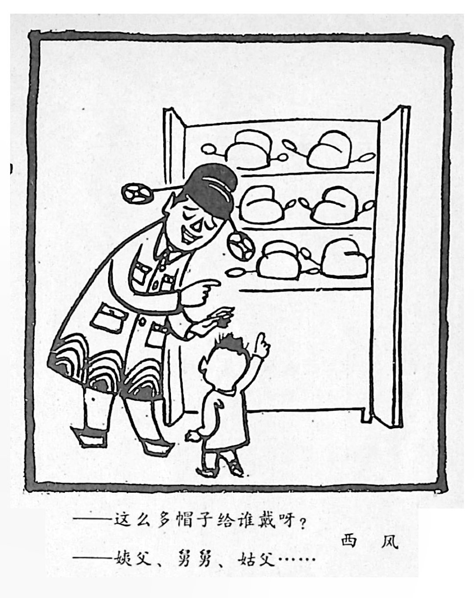

西风 《人事》1985年第1期（总第1期），封三
无题
Untitled (“So many hats — who are they for?”)
- Caption
- ——这么多帽子给谁戴呀？
——姨父、舅舅、姑父……
—So many hats — who are they all for? —Your uncles: Auntie's husband, Mum's brother, Dad's sister's husband… - Description
- A cadre wearing an old-style official's winged cap shows a child a cabinet stacked with more of the same caps, each reserved for a relative.
- Note
- The winged black cap (乌纱帽) stands for official rank. The reply lists three different kinds of uncle — 姨父, 舅舅, 姑父 — which English cannot distinguish.
- Artist
- Xi Feng 西风
- Published in
- 《人事》1985年第1期（总第1期）, inside back cover
- Themes
- Nepotism · Privilege

Cite
Xi Feng, “无题” [Untitled (“So many hats — who are they for?”)], Renshi (Personnel) 《人事》, 1985, no. 1, inside back cover.